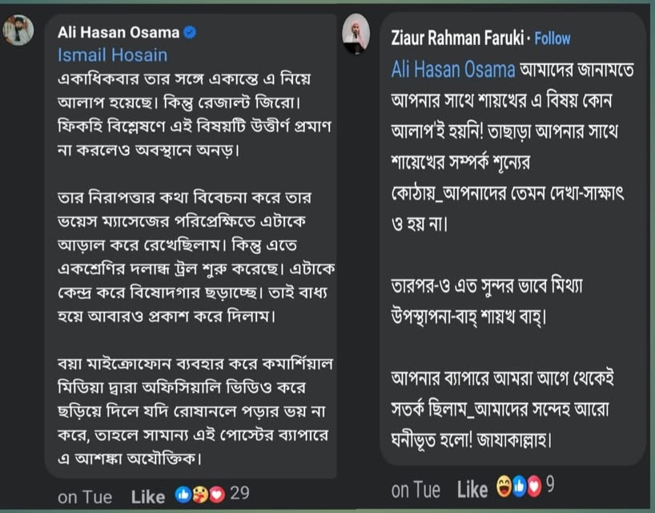

শাইখ @[100093139465309:2048:Harun Izhar] হাফিজাহুল্লাহু'র উচিত পেছনে ছুরিকাঘাতকারী…
৬ এপ্রিল, ২০২৪
শাইখ @[100093139465309:2048:Harun Izhar] হাফিজাহুল্লাহু'র উচিত পেছনে ছুরিকাঘাতকারী মুন|ফেক ও নাটকবাজ চরিত্রের লোকগুলোর ব্যাপারে সদা সতর্ক থাকা।
সুস্পষ্ট দুশমনের ব্যাপারে মানুষ সজাগ থাকে বিধায় ক্ষতির সম্ভাবনা কমে যায়। কিন্তু বন্ধুরূপী হিপোক্রেট পিটে ছুরি বসানোর লক্ষ্যে দুর্বল হালতে পাওয়ার অপেক্ষায় থাকে, যার ক্ষতি অপূরণীয়।
বিদ্বেষে টইটম্বুর বক্তা আলি হাসান উসামা যেন শাইখের এ মুহুর্তটির জন্য অধীর আগ্রহে প্রহর গুনছিল। বিগত এক পোস্টে বলেছিলাম, উসামা তার পোস্টে কৌশলে শাইখ হারুন ইজহারকে দা/য়ে/শি ট্যাগ দেয়ার অপচেষ্টা করেছে।
অতঃপর পাব্লিকের নিন্দার মুখে পোস্ট হাইড করে দেয়। এরপর আবার তা পাব্লিক করেছে। কেন করেছে, খুলে বলছি—
শাইখের সঙ্গে জাহমি উসামার আকিদাহর বিরোধ তো সুস্পষ্ট। এছাড়াও আরেকটি উদ্দেশ্য হল শাইখের সঙ্গে বারাআত ঘোষণা স্পষ্ট করে রাখা। অন্যান্য পোস্টে সে তার বারাআতের কথাটি স্পষ্ট করেছে; তবুও সমালোচিত পোস্টটি পাব্লিক রাখার বিশেষ ফায়দা হচ্ছে নিজের কাঁধে বয়ে বেড়ানো ট্যাগ— খা রে জি/জি হা দি/দা য়ে শি— যেন একচেটিয়া হারুন ইজহারের ওপর সেঁটে দেয়া যায়। আর নিজেকে পুরো সেইফ জোনে নিয়ে আসা যায়।
যাতে পরে হারুন ইজহার উপর মহলের দৃষ্টিতে আটকে গেলেও তার সঙ্গে শাইখের সুসম্পর্ক ভেবে প্রশাসন যেন তাকে জেরা করতে না আসে। সে তো সুখে থাকতে চায়। হারুন ইজহারকে সুখে থাকতে ভূতে কিলাচ্ছে। এমনটাই তো পোস্টে সে বলেছে।
এ দেশে ইসলামপন্থীদের দমনপীড়নের জন্য কোন অজুহাতগুলো ইউজ করা হয়, সেগুলো উসামার অজানা নয়। এতদসত্ত্বেও সে ‘নতুন জি হ| দি সংগঠনের আবির্ভাব, দা/য়ে/শি কর্মপন্থা’ বলে যেন শাইখকে জিন্দানখানার দিকে দ্রুত এগিয়ে দিতে চায়। নগদ ভরে দিতে পারলে যেন বিদ্বষী লোকটা আরও খুশি হয়। এতেই হয়ত তার বিজয় জ্ঞান করছে, আল্লাহ মা'লুম।
যারা মনে করেন, শাইখ হারুন ইজহারের সঙ্গে উসামার খুবই আন্তরিকতা ও সুসম্পর্ক বিদ্যমান, তারা পোস্টে যুক্ত স্ক্রিনশটে Ziaur Rahman নামক ভাইয়ের মন্তব্য দেখে সম্পর্কের গভীরতা(?) ও উসামার মিথ্যাচার বুঝে নেয়ার চেষ্টা করুন। (স্ক্রিনশট উসামার পোস্ট থেকে নেয়া)
শাইখ হারুন ইজহারকে আল্লাহ সকল প্রকাশ্য শত্রু ও অপ্রকাশ্য মু/নাফেকি চরিত্রের বিদ্বেষীদের অনিষ্ট থেকে হেফাজত করুন।
শাইখ Harun Izhar হাফিজাহুল্লাহু'র উচিত পেছনে ছুরিকাঘাতকারী মুন|ফেক ও নাটকবাজ চরিত্রের লোকগুলোর ব্যাপারে সদা সতর্ক থাকা।
সুস্পষ্ট দুশমনের ব্যাপারে মানুষ সজাগ থাকে বিধায় ক্ষতির সম্ভাবনা কমে যায়। কিন্তু বন্ধুরূপী হিপোক্রেট পিটে ছুরি বসানোর লক্ষ্যে দুর্বল হালতে পাওয়ার অপেক্ষায় থাকে, যার ক্ষতি অপূরণীয়।
বিদ্বেষে টইটম্বুর বক্তা আলি হাসান উসামা যেন শাইখের এ মুহুর্তটির জন্য অধীর আগ্রহে প্রহর গুনছিল। বিগত এক পোস্টে বলেছিলাম, উসামা তার পোস্টে কৌশলে শাইখ হারুন ইজহারকে দা/য়ে/শি ট্যাগ দেয়ার অপচেষ্টা করেছে।
অতঃপর পাব্লিকের নিন্দার মুখে পোস্ট হাইড করে দেয়। এরপর আবার তা পাব্লিক করেছে। কেন করেছে, খুলে বলছি—
শাইখের সঙ্গে জাহমি উসামার আকিদাহর বিরোধ তো সুস্পষ্ট। এছাড়াও আরেকটি উদ্দেশ্য হল শাইখের সঙ্গে বারাআত ঘোষণা স্পষ্ট করে রাখা। অন্যান্য পোস্টে সে তার বারাআতের কথাটি স্পষ্ট করেছে; তবুও সমালোচিত পোস্টটি পাব্লিক রাখার বিশেষ ফায়দা হচ্ছে নিজের কাঁধে বয়ে বেড়ানো ট্যাগ— খা রে জি/জি হা দি/দা য়ে শি— যেন একচেটিয়া হারুন ইজহারের ওপর সেঁটে দেয়া যায়। আর নিজেকে পুরো সেইফ জোনে নিয়ে আসা যায়।
যাতে পরে হারুন ইজহার উপর মহলের দৃষ্টিতে আটকে গেলেও তার সঙ্গে শাইখের সুসম্পর্ক ভেবে প্রশাসন যেন তাকে জেরা করতে না আসে। সে তো সুখে থাকতে চায়। হারুন ইজহারকে সুখে থাকতে ভূতে কিলাচ্ছে। এমনটাই তো পোস্টে সে বলেছে।
এ দেশে ইসলামপন্থীদের দমনপীড়নের জন্য কোন অজুহাতগুলো ইউজ করা হয়, সেগুলো উসামার অজানা নয়। এতদসত্ত্বেও সে ‘নতুন জি হ| দি সংগঠনের আবির্ভাব, দা/য়ে/শি কর্মপন্থা’ বলে যেন শাইখকে জিন্দানখানার দিকে দ্রুত এগিয়ে দিতে চায়। নগদ ভরে দিতে পারলে যেন বিদ্বষী লোকটা আরও খুশি হয়। এতেই হয়ত তার বিজয় জ্ঞান করছে, আল্লাহ মা'লুম।
যারা মনে করেন, শাইখ হারুন ইজহারের সঙ্গে উসামার খুবই আন্তরিকতা ও সুসম্পর্ক বিদ্যমান, তারা পোস্টে যুক্ত স্ক্রিনশটে Ziaur Rahman নামক ভাইয়ের মন্তব্য দেখে সম্পর্কের গভীরতা(?) ও উসামার মিথ্যাচার বুঝে নেয়ার চেষ্টা করুন। (স্ক্রিনশট উসামার পোস্ট থেকে নেয়া)
শাইখ হারুন ইজহারকে আল্লাহ সকল প্রকাশ্য শত্রু ও অপ্রকাশ্য মু/নাফেকি চরিত্রের বিদ্বেষীদের অনিষ্ট থেকে হেফাজত করুন।
